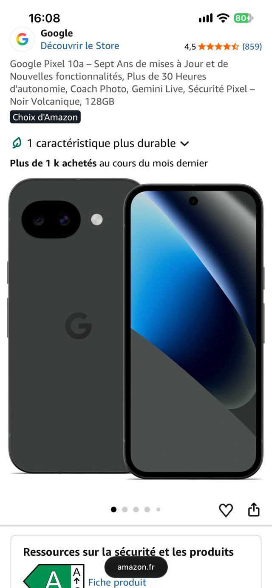
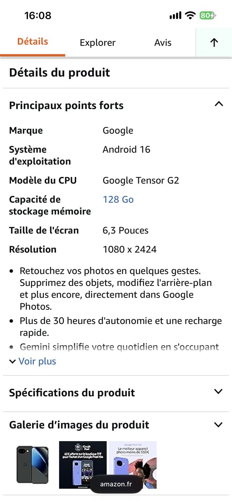
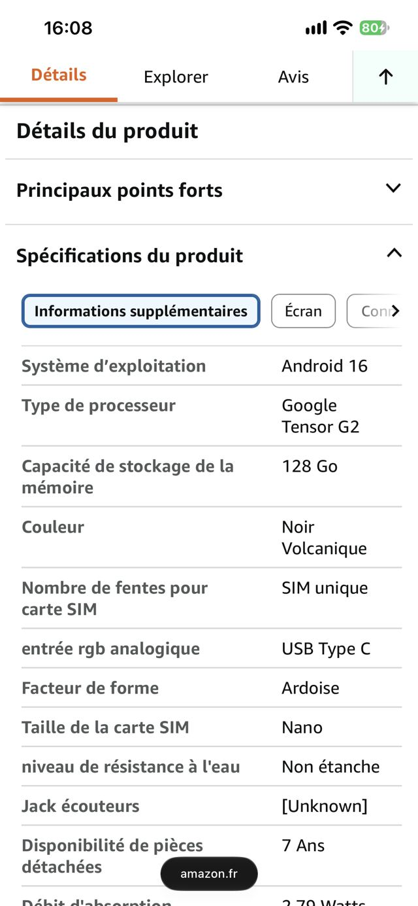

GUIDE PRATIQUE · À LIRE AVANT D’ACHETER
Choisir un smartphone à partir de votre usage
Un smartphone se choisit d’abord selon ce que vous en faites, pas selon la longueur de sa fiche technique. Les caractéristiques servent ensuite à vérifier si le modèle répond réellement à cet usage.
Le but est donc simple : comprendre les chiffres avant de les comparer, puis vérifier qu’ils correspondent à votre budget et à vos priorités.
- 01Android et iOSLes deux principaux systèmes mobiles.
- 02ÉcosystèmeL’ensemble des appareils et services qui fonctionnent autour du téléphone.
- 03Suivi logicielLes mises à jour fournies pendant sa durée de vie.
POUR COMMENCERDeux chemins selon votre approche
Soit vous savez déjà quel modèle vous voulez analyser, soit vous construisez votre choix à partir de votre usage.
Vous commencez votre recherche
Répondez à « Que faites-vous réellement ? ». Le guide vous montre les critères qui pèsent le plus sur votre usage.
Découvrir →
LA MÉTHODE
Une méthode simple, du besoin à la fiche technique
Partez de l’usage
Commencez par ce que vous faites réellement : travailler, étudier, jouer, photographier, naviguer ou simplement communiquer. Cela réduit immédiatement le nombre de caractéristiques à examiner.
Ouvrez la fiche du modèle
Sur le site marchand ou celui du constructeur, ouvrez la fiche du modèle. Repérez une zone intitulée Caractéristiques, Caractéristiques techniques, Détails ou Description. C’est dans cette zone que vous trouverez les informations à traduire.
Relevez seulement les lignes utiles
Ne cherchez pas à tout mémoriser. Commencez par l’écran, la batterie, les performances, la photo et la durée de vie ; ajoutez la connectivité ou la protection si votre usage les rend importantes.
Interprétez avant de comparer
Un chiffre décrit une propriété ; il ne constitue pas à lui seul un jugement sur le téléphone. 5 000 mAh indiquent une capacité de batterie, pas un nombre d’heures garanti. 120 Hz indique une fréquence de rafraîchissement ; cela ne signifie pas que toutes les applications produiront 120 images par seconde.
Le réflexe à retenir
Lisez la fiche comme une liste d’indices. Pour chaque chiffre, demandez ce qu’il mesure, ce qu’il change réellement et quelle information manque encore avant de comparer.
ÉTAPE 2 · RETROUVER L’INFORMATION
Où retrouver les caractéristiques sur une fiche produit
Les captures servent de repères visuels : localisez d’abord l’information sur la fiche, puis utilisez le guide pour comprendre ce qu’elle implique.
CAPTURE RÉELLERepère 1 · La liste des modèles

La liste permet surtout d’identifier le modèle et sa variante : capacité de stockage, couleur et parfois mémoire vive. Ouvrez ensuite la fiche exacte que vous envisagez d’acheter.
CAPTURE RÉELLERepère 2 · Les informations principales

Passez le titre et les photos. Recherchez les blocs consacrés aux caractéristiques, aux détails ou aux spécifications ; leur emplacement varie selon le vendeur.
EXEMPLE À REPÉRERRepère 3 · Les spécifications

Vous y trouverez généralement le système, la puce, le stockage, l’écran et les connexions, parfois la protection. Notez les termes utiles et revenez au guide pour les interpréter.
Les cinq familles à repérer
ÉcranLa taille renseigne sur le format ; OLED, AMOLED ou LCD décrivent la technologie ; les Hz concernent le rafraîchissement ; les nits donnent un indice sur la luminosité.
BatterieLes mAh mesurent une capacité électrique. Les watts renseignent sur la recharge. Pour l’autonomie, cherchez surtout des mesures réalisées dans des conditions comparables.
PerformanceLa puce conditionne une grande partie des performances ; la RAM fournit de l’espace de travail ; le stockage détermine la quantité de données que vous pouvez conserver.
PhotoLes mégapixels ne décrivent qu’une partie du système photo. Capteur, optique, stabilisation et traitement logiciel doivent être considérés ensemble.
Durée de vieLa durée de suivi logiciel, la batterie et la possibilité de réparer l’appareil influencent directement la durée pendant laquelle l’achat reste pertinent.
POUR ADAPTER LA LECTURE
Choisissez un profil pour concentrer votre attention
Les quatre profils restent disponibles. Le raccourci sert simplement à commencer par les critères les plus pertinents pour votre usage.
01Profil 1 · Étudier au quotidien
Profil 1 · Étudier au quotidien
Pour les cours, les transports et la vie quotidienne, le téléphone doit rester autonome et durable 4–5 ans.
Les signaux à rechercher
+
256 Go si vous gardez cours, photos et vidéos plusieurs années.
−
64 Go non extensible : peu de marge si le téléphone doit durer.
+
Suivi logiciel clairement annoncé : moins de risque de changer de téléphone trop tôt.
−
Autonomie annoncée uniquement en mAh : la durée réelle reste inconnue.
+
Écran lisible dehors et charge suffisamment rapide pour une journée chargée.
−
Fiche muette sur la luminosité ou la recharge : information à vérifier avant achat.
En pratique, vérifiez ceci
Stockage256 GoÉcranOLED · 90–120 HzAutonomietests réels favorablesSuividurée annoncée clairement
Ces critères forment un seuil de départ, pas une liste de marques. Une fois ces bases satisfaites, comparez la photo, le confort et les fonctions qui vous servent réellement.
La question décisive
« Est-ce qu’il restera suffisamment fiable et autonome pendant ma journée habituelle ? »
08 hcours18 htransport22 hencore utilisable
02Profil 2 · Travailler en mobilité
Profil 2 · Travailler en mobilité
Pour le travail, fiabilité réseau et multitâche sont critiques ; la batterie et les performances doivent tenir toute une journée.
Les signaux à rechercher
+
Bonne luminosité mesurée : les documents restent lisibles dehors.
−
Pic de luminosité seul : impossible de conclure sur le confort réel.
+
Charge rapide documentée : une courte pause peut réellement dépanner.
−
Réparation et pièces inconnues : risque de coût et d’immobilisation.
La stabilité après chauffe
PDF→Carte→Appel→Photo→Partage
Cette succession d’actions ressemble davantage à une journée de travail qu’un score de benchmark isolé. Vérifiez la fluidité, la lisibilité et la stabilité pendant l’ensemble du parcours.
En pratique, vérifiez ceci
ÉcranOLED/LCD très lisible dehorsPucemodèle récent et documentéChargerapide + temps de charge testéProtectionIP + coque + réparabilité
Si ces informations ne sont pas vérifiables dans la fiche, complétez-les avec un test indépendant avant de prendre votre décision.
03Profil 3 · Jouer dans la durée
Profil 3 · Jouer dans la durée
Pour jouer régulièrement, les FPS stables, le refroidissement et la réactivité réseau sont prioritaires.
Les signaux à rechercher
+
Puce exacte + GPU identifiable : les performances peuvent être comparées.
−
« Octa-core » sans modèle : information trop vague pour prévoir les performances.
+
Test prolongé avec températures ou performances après plusieurs dizaines de minutes.
−
Benchmark instantané seul : il ne montre pas la tenue après chauffe.
La stabilité après chauffe
0 min
20–30 min
stabilitéCherchez des essais prolongés et observez la température, la baisse éventuelle des fréquences, les FPS moyens et leur stabilité. Une pointe de performance ne suffit pas.
En pratique, vérifiez ceci
PuceSoC exact + GPUÉcran120 Hz réellement exploitableThermiquetest prolongé 20–30 minBatteriecapacité + charge rapide
Pour des sessions régulières, la constance compte davantage qu’un pic obtenu pendant quelques minutes. Comparez donc la tenue des performances autant que le score initial.
04Profil 4 · Photo et création
Profil 4 · Photo et création
Pour la photo et la vidéo, le système complet (capteur, optique, ISP, IA) doit livrer une image fidèle sans traitement agressif.
Les éléments à examiner
Capteur principal : sa taille et sa qualité influencent la quantité de lumière captée.
Stabilisation optique : utile lorsque les mains bougent et pour les scènes peu lumineuses.
Objectifs : ultra grand angle, téléobjectif et principal servent des cadrages différents.
Vidéo : regardez la résolution, la fréquence d’images, la stabilisation et les limites de durée.
Pourquoi les mégapixels ne suffisent pas
Un grand nombre de pixels ne garantit pas une meilleure image. Le résultat dépend notamment de la lumière reçue, de l’optique, de la stabilisation, du traitement et de la scène photographiée.
Pour comparer, regardez des photos prises dans des situations difficiles : nuit, mouvement et contre-jour révèlent rapidement les limites d’un système photo.
La question décisive
« Est-ce qu’il réussit les photos que je prends réellement ? » est une question plus utile que « combien de mégapixels ? ».
nuit+mouvement+contre jour→qualité réelle
Un modèle en tête ? Faites le point en 45 secondes
Ne relisez pas toute la fiche. Passez directement par les cinq familles qui structurent l’analyse et indiquez ce qui compte pour vous. Si vous n’avez pas encore choisi de modèle, le guide peut ensuite afficher jusqu’à trois références compatibles avec ces critères.
0 / 5 critères renseignésOuvrez chaque famille et indiquez le niveau ou les caractéristiques que vous recherchez.
PAS ENCORE DÉCIDÉ
Jusqu’à trois modèles correspondant à vos critères
Le résultat combine votre profil et les critères que vous venez de renseigner.
Complétez les cinq critères pour obtenir les recommandations.
CHECKLIST
Avant de passer commande
1
1. Mon usageJe peux expliquer en une phrase ce que je vais principalement en faire.
2
2. La ficheJ’ai retrouvé les spécifications du modèle et relevé uniquement les informations pertinentes.
3
3. Les chiffres comprisJe distingue la mesure réelle de ce que le chiffre ne permet pas d’affirmer.
4
4. La durée prévueJ’ai vérifié le suivi logiciel, la réparabilité et la capacité adaptée à la durée prévue.
5
5. La comparaisonJe compare les différences qui ont un effet concret sur mon usage et mon budget.
Comprendre chaque terme de la fiche produit
OLED, Hz, RAM, stockage, mAh, OIS, 5G, IP68 : le lexique part de situations concrètes et descend ensuite vers la technique.
Sources utiles
DÉCODER LE MARKETINGCe que ça change vraiment
Les constructeurs vantent des chiffres impressionnants : 200 Mpx, 120 Hz, 12 Go RAM. Voyons l'impact réel.